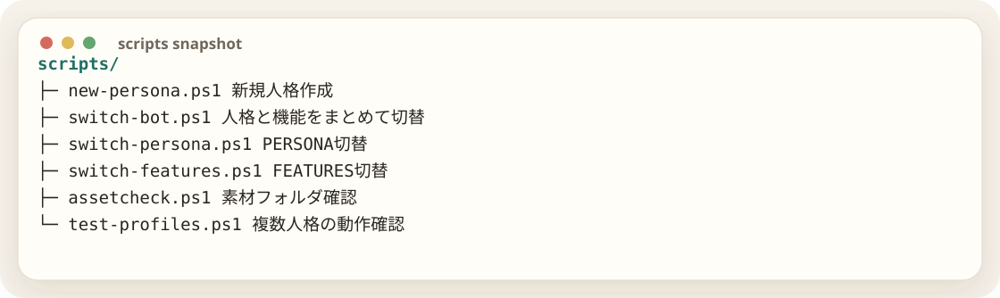

人が手でやる部分をスクリプトに逃がす
人格や機能を切り替えられるようになると、手作業のミスが増える。そこで、PowerShellスクリプトと確認コマンドを整備した。

new-persona.ps1 は新規人格を作るためのテンプレート。switch-bot.ps1 は人格と機能プロファイルをまとめて切り替える。assetcheck.ps1 は素材フォルダの存在確認。こういう道具を作っておくと、次のキャラを作る時に再現性が出る。
configcheck
設定確認用に cmd/configcheck も追加した。
go run ./cmd/configcheckPERSONA_PATHが存在するか、IMAGE_REF_DIRが存在するか、FEATURESが読めるかを見る。Railwayへ上げる前にこの確認があると、単純な設定ミスを潰せる。
作業者毎回どこか壊してないか不安なんだよね
GPT確認コマンドを作りましょう。設定値とファイル存在を表示できれば、デプロイ前の切り分けが楽になります。